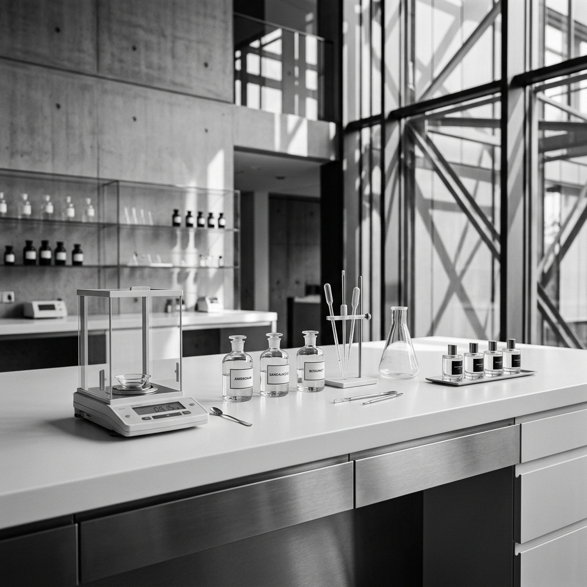
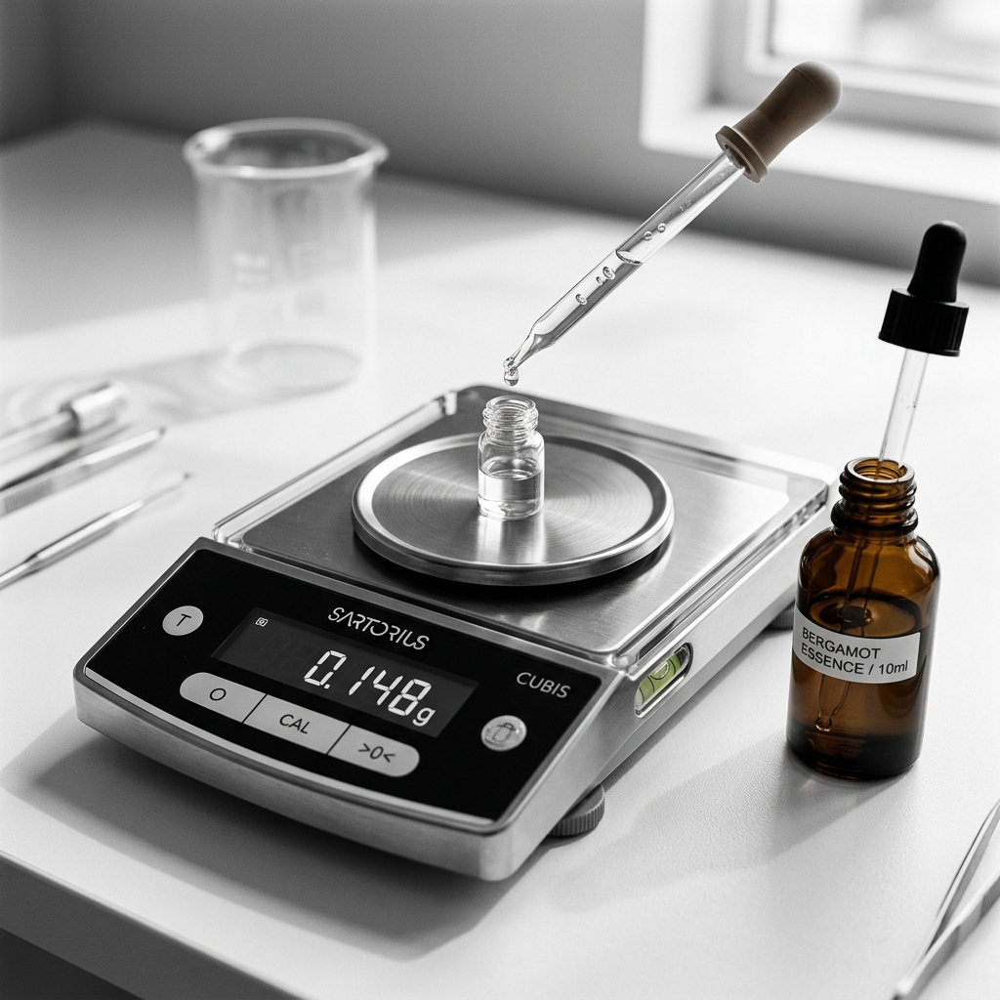

Made by hand.
From scratch.
No production line. No outsourced formula. Every nubie scent is built at a bench, tested on skin, and revised until there's nothing left to change.


We do not create fragrances, we create a presence.
Born first as a thought shaped by emotion and belief, each scent becomes a representative of who we are, designed not only to be smelled, but to be felt, lived, and to speak without words.
Natural & Synthetic
"We use both natural and synthetic materials. Not because one is better — because each does something the other can't."


Natural
Extracted from plants, resins, and flowers. Naturals carry the full complexity of their origin — no two batches are identical. That variation is part of what makes them interesting.


Synthetic
Created in a lab to isolate or invent specific olfactive qualities. Synthetics let us be precise — a molecule that smells exactly like warm skin, clean wood, or nothing found in nature at all.
For those who come after
Nubie approaches packaging with the intention to reduce, materials are chosen with care—favoring simplicity, recyclability, and minimal waste. There is no excess, only what is necessary to protect and present the product.
No animal-derived ingredients
None of our formulas contain musk from animals, civet, ambergris, or any ingredient sourced from wildlife. Every note is lab-created — identical in character, cleaner in conscience.
Never tested on animals
nubie does not conduct, commission, or support animal testing at any stage of development. Our safety testing is done through modern, cruelty-free methods.
100% recyclable packaging
From the bottle to the box, every piece of nubie packaging is fully recyclable. We believe what holds the scent should carry as little weight on the planet as possible.